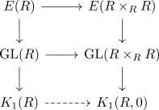

K1 of a ring as relative K1 group
Proposition
Let $R$ be a ring Then there exists a natural isomorphism
\begin{align*}
\eta: K_1(-,(0)) \rightarrow K_1(-)
\end{align*}
for the
Proof
Note that $R \times_{R/(0)} R \cong R$ - either by explicit computation or by abstract nonsense (here the diagram is an equivalence to the the constant diagram from a point, equivalence of categories as initial functor)
Thus we get natural isomorphism
\begin{align*}
\mathrm{GL}(R) \cong& \mathrm{GL}(R \times_{R} R) \\
E(R) \cong& E(R \times_{R} R) \\
\end{align*}
(cf infinite general linear group functor, infinite elementary linear group functor)
which induces a natural isomorphism

Then applictaion of the cokernel cokernel functor preserves the isomorphism